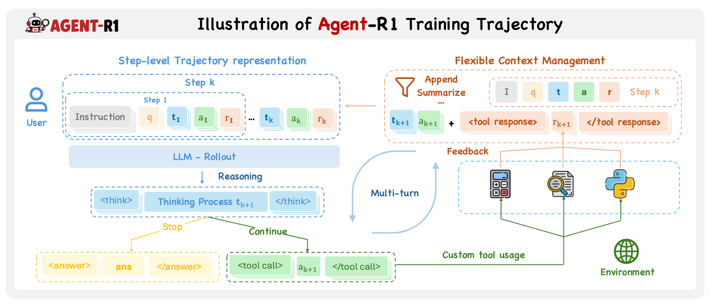
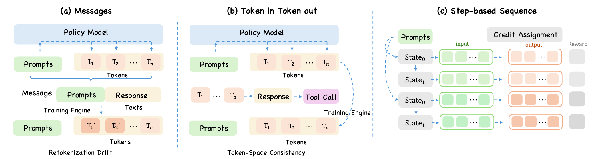

检索差是 recipe/env 问题，tool JSON 错是 prompt/parser 问题，advantage 全零是 reward/group 问题，显存与吞吐则多半是 veRL worker/rollout runtime 问题。
Source-code architecture field guide
Agent-R1 架构与源码地图：它如何 Build on veRL
这不是一篇“目录翻译”。目标是回答三个工程问题：多轮工具调用的轨迹在哪里产生，怎样被改造成 veRL 能训练的数据，以及 GRPO 最终在哪一层把奖励变成参数更新。
Agent-R1b124aa46534c
veRL runtime0.7.0.dev0 · f9c855f7
Hands-on recipeQwen3-4B · HotpotQA · GRPO
是的，现在正好该看整体架构
你已经跑通训练并遇到 reward、格式正确率和组内 advantage 的问题。此时继续只改 shell 参数，容易变成“会运行，不知道为什么”。源码架构能把实验现象放回正确的责任层。
把 reward 从 EM 改成 hybrid，只改评分密度；改 AgentFlowStep 或 trajectory flattening，则会改变训练样本的语义和 loss mask，风险完全不同。
面试时不再说“我用 veRL 跑了 GRPO”，而是能说明复用了哪些分布式能力、自定义了哪些 agent 轨迹逻辑，以及指标回归如何定位。
一句话结论
Agent-R1 的核心价值不是再实现一遍 PPO，而是给 veRL 加上一层 step-native Agent trajectory adapter：上接环境与工具，下接 veRL 的分布式后训练流水线。
一张图看懂整体分层
从上往下看：任务 recipe 定义“做什么”；Agent-R1 核心定义“多步轨迹长什么样”；veRL 定义“怎样大规模采样和更新”；底层引擎负责真正占用 GPU。
Task Recipe
业务与环境层
HotpotQA flowFAISS + BGEPromptRewardDataset
Agent-R1 recipe回答“任务如何执行”
Agent-R1 Core
轨迹语义层
AgentFlowAgentEnvAgentFlowSteptrajectory_uidsstep-aware advantage
Agent-R1 owns回答“多步如何训练”
veRL
分布式训练层
DataProtoRay workersFSDPPPO trainertrackingcheckpoint
Reused + extended回答“如何扩展到多卡”
Runtime
模型执行层
vLLM / SGLangPyTorchCUDARay clusterGPU memory
Engine ecosystem回答“token 和梯度在哪算”

读图时最容易误解的一点
图中的每个 step 不是只用于展示。源码会把每个 step 变成一行独立的训练数据，同时用同一个 trajectory_uid 把这些行重新关联起来。这正是 Agent-R1 相比普通单轮 veRL pipeline 最关键的结构变化。
“Build on veRL” 到底是什么意思
不是把 Agent-R1 当作 veRL 的一个 prompt 模板，也不是完全 fork 后独立维护。它大量继承 veRL 类和数据协议，只在多步 Agent 训练需要改变的地方做局部替换。
| 能力 | 关系 | 实际代码边界 |
|---|---|---|
| 配置与启动 | 复用 | agent_ppo_trainer.yaml 继承 veRL 的 ppo_trainer，只覆盖 rollout.agent 配置；Hydra CLI 参数仍遵循 veRL 结构。 |
| 训练主循环 | 继承并改写 | RayAgentTrainer(RayPPOTrainer) 保留 veRL 的资源、checkpoint、tracking 和 RPC 框架，重写 fit() 以处理多 step 行。 |
| 批数据协议 | 复用 | 所有张量与元数据最终回到 veRL 的 DataProto，因此下游 worker 不必认识某个具体环境。 |
| Rollout 服务 | 复用 | get_rollout_replica_class()、AsyncLLMServerManager 和 vLLM/SGLang server 来自 veRL；Agent-R1 负责循环调用。 |
| Agent trajectory | 自有 | AgentFlowBase、AgentFlowStep、AgentFlowManager、AgentEnv 定义 step-native 轨迹。 |
| Advantage | 扩展 | Agent-R1 自己实现 trajectory-aware GAE、GRPO、RLOO、GiGPO，把 step reward 先聚合到 trajectory，再广播到动作 token。 |
| Actor / Critic | 薄封装 | 本地 DataParallelPPOActor 和 Critic 继承 veRL 实现，加入 trajectory mini-batch、mask 和本地 loss。 |
| FSDP / 新 Engine worker | 薄封装 | 先调用 veRL worker 初始化，再把内部 actor/critic 替换成 Agent-R1 的实现。 |
| Reward runtime | 路由扩展 | 复用 veRL reward manager，同时允许 rule reward、DisRM、GenRM 和用户自定义函数在同一入口运行。 |
# 继承关系就是最直接的证据 class RayAgentTrainer(RayPPOTrainer): ... class DataParallelPPOActor(VerlDataParallelPPOActor): ... class DataParallelPPOCritic(VerlDataParallelPPOCritic): ... class AsyncActorRolloutRefWorker(VerlAsyncActorRolloutRefWorker): ... # 配置也不是重做一份，而是继承 veRL defaults: - ppo_trainer - /overrides/rollout@actor_rollout_ref.rollout - _self_
面试里的准确说法
“我们复用 veRL 的分布式训练底座，并在 rollout、trajectory batching、advantage 和 worker loss 接口处做 step-aware 扩展。”这比“Agent-R1 是基于 veRL 的”多了一层可验证的工程含义。
真正要记住的是两条回路
Agentic RL 的代码看起来复杂，是因为“Agent 和环境反复交互”与“模型反向传播”是两条不同回路。前者产数据，后者消费数据。
A. Trajectory generation loop
- 从 dataset 取一个问题，并按
rollout.n复制。 - AgentFlow 根据当前 observation 生成 prompt。
- veRL 管理的 vLLM/SGLang server 采样完整 response。
- 环境解析 action、执行工具、给出下一 observation/reward。
- 重复直到 final answer 或
max_steps。 - 把 trajectory 展开成多个
AgentFlowStep行。
B. Policy update loop
- 将 dataset 字段复制到每个 step 行并合并
DataProto。 - 计算 reward、old log-prob、ref log-prob 或 value。
- 按
uid和trajectory_uid计算 advantage。 - 保持 trajectory 完整地规划 PPO mini-batch。
- Actor 计算 policy loss，Critic 可选地计算 value loss。
loss.backward()与 optimizer step 更新参数。

从 shell 到 loss.backward() 的完整调用链
下面是你运行 HotpotQA GRPO 时最值得掌握的 12 个站点。知道它们，日志里的大多数指标都能找到代码归属。
1
启动参数
examples/hotpotqa/run_grpo.sh选择 GRPO、模型、数据、rollout.n、vLLM、reward 文件、GPU 数和日志后端，最后运行 Python module。
2
Hydra 组装配置
config/agent_ppo_trainer.yaml加载 veRL 的 PPO 默认配置，再用 AgentFlowConfig 替换 rollout.agent 部分。shell 参数是最后一层 override。
3
Ray 入口
main_agent_ppo.py::run_ppo_agent初始化 Ray runtime，创建远程 TaskRunner，让训练 driver 与 GPU worker 分离。
4
角色与资源
TaskRunner.run注册 Actor/Rollout、Critic、Reference、RewardModel worker，创建 veRL dataset/sampler/resource pool。
5
Trainer
RayAgentTrainer.init_workers / fit初始化模型 worker、AgentFlowManager、tracker 和 checkpoint，然后进入每个 global step。
6
复制 rollout
gen_batch.repeat(n)GRPO 对每个 prompt 生成 n 条 trajectory。原始 prompt 的 uid 保持为组标识。
7
分发 Agent
AgentFlowManager.generate_sequences唤醒 rollout replicas，把 prompt batch 切给多个 Ray AgentFlowWorker，并发执行后再拼回 DataProto。
8
运行任务 flow
HotpotQAAgentFlow.run重建 prompt、请求模型、解析 tool call、FAISS 检索、更新 passage/history，直到 final answer。
9
step 标准化
AgentFlowBase._postprocess做 padding、attention/response mask、position ids，并在缺少环境即时 reward 时调用 RewardLoop。
10
trajectory 展开
AgentFlowWorkerBase._postprocess每个 step 变为一行，附带 trajectory_uids、step_indices、reward tensor 和额外指标。
11
奖励与 advantage
compute_advantageGRPO 先汇总一条 trajectory 的全部 step reward，再在同 prompt 的 n 条 trajectory 间归一化。
12
更新参数
DataParallelPPOActor.update_policy按 response_mask 聚合 policy loss，可选加 entropy/KL，执行 backward、梯度裁剪与 optimizer step。
一条 trajectory 如何装进 veRL 的 DataProto
这是理解 Agent-R1 最关键的数据变换。用一个具体数字例子：1 个问题、n=4，四条 rollout 分别走了 2、3、3、4 个 step。
1 prompt → 4 trajectories → 12 step rows
原始 dataset 行
prompt、agent_name、reward_model、extra_info。Trainer 为它创建一个组 uid=A。
→
rollout.n = 4
得到 T1、T2、T3、T4。它们共享 uid=A，但各自有唯一 trajectory_uid。
→
flatten 成 12 行
每行是一对独立的 prompt/response tensor，并带 trajectory_uid 与 step_index；下游仍是标准 DataProto。
| 字段 | 作用 | 为什么需要 |
|---|---|---|
uid | 原始 prompt 的 GRPO group id | 知道哪几条 trajectory 应该互相比较。 |
trajectory_uids | 同一条 rollout 中所有 step 的 id | 先把 step reward 加回一条 trajectory，保持 episode 语义。 |
step_indices | step 在 trajectory 中的顺序 | GAE/return、日志重建和 trajectory dump 都需要时间顺序。 |
response_mask | 哪些 response token 参与 loss | padding 或工具 observation 不应被当成模型 action 训练。 |
token_level_rewards | reward 放在有效 response 的最后一个 token | 保持与 veRL token-level loss 接口兼容。 |
sample_mask | 标识 DP 对齐所加的 padding 行 | 为了多卡 shape 一致而复制的行必须是零梯度。 |
# GRPO 在 Agent-R1 里不是直接对 step reward 做组均值 trajectory_total = sum(step_reward for step in same_trajectory) group_mean, group_std = stats(trajectory_total for rollout in same_prompt) trajectory_adv = (trajectory_total - group_mean) / (group_std + eps) # 然后把一条 trajectory 的 advantage 广播回它所有 action token advantages[row] = trajectory_adv[trajectory_uid] * response_mask[row]
这也解释了“全 0 reward 为什么没梯度”
若同一个 prompt 的 4 条 trajectory 总分全部相同，减去组均值后 advantage 都接近 0。不是训练器忽略了数据，而是相对比较没有提供“哪条更好”的方向。
HotpotQA 中一条样本究竟怎样跑
官方 HotpotQA recipe 没有直接套通用 AgentEnvLoop，而是实现专用 HotpotQAAgentFlow，因为它需要结构化管理 passage、搜索历史、prompt budget 和解析修复。
1
读问题
raw_prompt[0]["content"]数据预处理已把 HotpotQA row 转为 Agent-R1 统一 schema，并标注 agent_name=hotpotqa_agent。
2
首次检索
force_first_search默认先拿原问题搜索一次，避免小模型第一步只空想而没有 evidence。
3
重建 state
_build_messages()每一步都用 question + accumulated passages + history actions + parse feedback 重建完整 prompt，而非无限追加聊天历史。
4
控制长度
_prompt_ids_within_budget()优先缩短 passage block；不能简单截 prompt 尾部，否则会丢失前缀里的工具 schema。
5
采样 action
server_manager.generate()完整 LLM response 是此 step 的 action，可能含一个或多个 <tool_call>，也可能是 final <answer>。
6
解析与容错
ToolParser + fallback先走 veRL parser；失败后尝试恢复单引号 dict 等常见小模型错误，并把格式错误反馈写进下一步 prompt。
7
本地检索
HotpotQASearchToolLegacyBGE 编码 query，FAISS 搜索 corpus，返回 passages 并记录 history；最多并行处理配置数量的 calls。
8
终局评分
reward_fn.compute_score工具 step 先记 0，final step 由 RewardLoop 提取 <answer> 后做 normalized EM。我们的实验另加 token-F1 hybrid。
为什么格式正确率可能下降
reward 只奖励答案内容时，模型可能发现“多说一点也能拿部分 token-F1”，但训练信号没有同等约束 <answer> 和 tool JSON 格式。答案质量目标与协议合规目标是两个维度，必须在 reward 或数据采样中分别监控。
全仓库逐文件地图
下面覆盖当前官方快照中的项目代码、recipes、examples、docs 与工程元数据。空的 __init__.py 也列出；大量同构启动脚本按算法族合并说明，避免把参数重复当成架构。
agent_r1/agent_flow 轨迹生成核心 · 4 files
agent_flow.py | 定义 AgentFlowStep/Output/Base、注册表、Ray Worker 与 Manager；负责 step padding、reward 调用、trajectory flattening、rollout replica 管理和性能指标。 |
agent_env_loop.py | 通用 reset → LLM → env.step 循环；把环境的 Observation 转为 prompt，并为每回合创建独立 step。 |
single_step_agent_flow.py | 最简单的单轮 completion flow，用于普通单轮 RL 或验证框架最小路径。 |
__init__.py | 导出核心类，同时导入内置 flow 以触发装饰器注册。 |
agent_r1/env + agent_r1/tool 环境与工具协议 · 8 files
env/base.py | 定义 Observation、Action 和抽象 AgentEnv，含环境注册与按配置实例化。 |
env/tool_format.py | 定义工具调用格式适配器，将 Hermes、GPT-OSS 等模型特定 wire format 与执行逻辑解耦。 |
env/envs/tool.py | 内置有状态 ToolEnv：维护 messages，解析多个 tool call，并发执行工具，返回 observation/reward/done。 |
env/__init__.py | 导出环境协议并导入 ToolEnv 触发注册。 |
env/envs/__init__.py | 子包导出 ToolEnv。 |
tool/base.py | 工具抽象类、注册表、参数与返回值归一化，以及统一异步 run/execute 接口。 |
tool/schema.py | Pydantic 定义 OpenAI function/tool schema、function call 与多模态 ToolResponse。 |
tool/__init__.py | 导出 BaseTool 和 ToolResponse。 |
agent_r1/config + reward_loop 配置与奖励路由 · 6 files
config/agent_ppo_trainer.yaml | Hydra 根配置：继承 veRL ppo_trainer，替换 rollout.agent 类型。 |
config/overrides/rollout.yaml | 强制 async rollout，并声明 AgentFlow workers、default flow、max steps、custom server 等字段。 |
config/config.py | 定义兼容 veRL BaseConfig 的 checkpoint、profile、model 与 AgentFlowConfig dataclass。 |
config/__init__.py | 集中导出 config dataclass。 |
reward_loop/reward_loop.py | Ray reward worker；统一调度自定义 reward、rule reward、DisRM/GenRM 和远程 reward router。 |
reward_loop/__init__.py | RewardLoop 包说明。 |
agent_r1/trainer 训练编排与算法 · 7 files
trainer/main_agent_ppo.py | Hydra/Ray 主入口；注册角色 worker，创建 veRL dataset/reward/resource pool，构造 RayAgentTrainer。 |
trainer/ppo/ray_trainer.py | 继承 veRL RayPPOTrainer；实现 step-aware rollout 合并、reward、advantage、更新、验证、trajectory dump。 |
trainer/ppo/core_algos.py | Agent 版 GAE、token-GAE、GRPO、REINFORCE、RLOO、GiGPO、policy/value loss 与 loss aggregation。 |
trainer/ppo/trajectory_batching.py | 保持 trajectory 完整地规划 PPO mini-batch，并为 DP rank 对齐添加零 loss padding 行。 |
trainer/ppo/metric_utils.py | 复用 veRL sequence metrics，增加 step/trajectory 语义下的数据指标。 |
trainer/__init__.py | Trainer 包标记文件。 |
trainer/ppo/__init__.py | PPO 子包标记文件。 |
agent_r1/workers GPU 更新执行层 · 9 files
workers/actor/dp_actor.py | 继承 veRL Actor；读取 trajectory mini-batch 元数据，计算 policy/entropy/KL loss，执行 backward 与 optimizer step。 |
workers/critic/dp_critic.py | 继承 veRL Critic；按 Agent-R1 mask 和 mini-batch 规则更新 value network。 |
workers/fsdp_workers.py | 薄 FSDP wrapper；先用 veRL 建模，再将 actor/critic 替换为本地 step-aware 实现。 |
workers/engine_workers.py | 适配 veRL 新 model-engine worker，修补 micro-batch 准备并注入 Agent-R1 loss。 |
workers/utils/losses.py | 新 engine 路径使用的 SFT、PPO、value loss；处理 unpad output、mask 与全局 token 归一化。 |
workers/actor/__init__.py | 导出本地 DataParallelPPOActor。 |
workers/critic/__init__.py | 导出本地 DataParallelPPOCritic。 |
workers/utils/__init__.py | 导出三类 loss 函数。 |
workers/__init__.py | Worker override 包说明。 |
recipes/hotpotqa 我们当前主路径 · 13 files
hotpotqa_agent_flow.py | 多跳搜索 Agent 主循环：state 重建、长度预算、生成、tool parsing、FAISS 搜索、step reward。 |
prompts.py | System/User prompt、<analysis>/<tool_call>/<answer> 协议与 search tool schema。 |
reward_fn.py | 提取 final answer，规范化大小写/冠词/标点/空白，对主答案与 aliases 做 EM。 |
base.yaml | 注册 hotpotqa_agent，配置 max_steps、并行工具数、BGE 模型、corpus root 和 parse feedback。 |
data_preprocess/process_hotpotqa.py | 把 HotpotQA/2Wiki/MuSiQue 转成统一 parquet schema，并可从 context 构建 retrieval corpus。 |
data_preprocess/__init__.py | 预处理子包标记文件。 |
env/search_tool.py | 加载 BGE 与 FAISS index、分配 embedding device、批量检索并解析 legacy tool result。 |
env/build_index.py | 读取 corpus，编码 passage，构建并保存 FAISS index。 |
env/build_retrieval_corpus.py | 从 2Wiki/MuSiQue 原始数据生成统一检索语料。 |
env/__init__.py | HotpotQA 环境子包标记文件。 |
requirements.txt | HotpotQA recipe 的额外依赖。 |
README.md / __init__.py | 任务安装、数据准备、训练说明与 Python 包标记。 |
recipes/gsm8k 最小训练与工具示例 · 10 files
prompts.py | 构造普通单轮消息和带工具的数学 Agent 消息。 |
tool.py | 注册 GSM8K 计算/评分工具，复用 veRL GSM8K reward scorer。 |
reward_fn.py | 把 recipe 接到 veRL 的 GSM8K 答案评分。 |
base.yaml | GSM8K AgentFlow/ToolEnv 配置。 |
data_preprocess/process_gsm8k.py | 生成普通单轮训练 parquet。 |
data_preprocess/process_gsm8k_tool.py | 生成带 agent_name/env_kwargs 的工具调用 parquet。 |
README.md | 最小 quick start 与数据/训练说明。 |
requirements.txt | 任务额外依赖。 |
__init__.py + data_preprocess/__init__.py | 包标记文件。 |
recipes/alfworld 文本环境 Agent · 13 files
alfworld_agent_flow.py | ALFWorld 多步 Agent 主循环与 action parsing。 |
env/alfworld_wrapper.py | 包装 TextWorld/ALFWorld 环境为可 reset/step 的文本接口。 |
env/tool_executor.py | 将模型工具调用映射为 ALFWorld admissible command。 |
data_preprocess/process_alfworld.py | 读取任务资产、生成 parquet，并复制运行时所需 game files。 |
prompts.py | 环境指令与工具格式 prompt。 |
utils.py | 格式化历史动作、可选命令和非法调用反馈。 |
reward_fn.py | 从环境 metadata 读取 success/reward，并回退到默认评分。 |
summarize_validation.py | 聚合验证 JSONL，按任务统计成功率与 step 指标。 |
base.yaml | Agent flow 与 ALFWorld runtime 配置。 |
README.md / requirements.txt | 安装、数据与依赖说明。 |
__init__.py + data_preprocess/__init__.py | 包标记文件。 |
recipes/webshop 可服务化购物环境 · 20 files
webshop_agent_flow.py | 购物 Agent 多步生成、action 解析和远程环境交互。 |
env/engine.py | WebShop 状态机、页面渲染、action 执行与商品匹配 reward。 |
env/server.py | FastAPI 环境服务，提供 health/reset/step。 |
env/client.py | AgentFlow 调用环境 HTTP API 的客户端。 |
env/schemas.py | reset/step request、response 与 EnvState 的 Pydantic schema。 |
env/catalog.py | 小型商品集清洗、目标生成、索引构建与保存。 |
env/full_catalog.py | 全量商品数据流式读取、标准化、human goals 与 Lucene index 构建。 |
env/build_index.py | WebShop 商品索引命令行入口。 |
env/build_full_artifacts.sh | 全量环境资产构建脚本。 |
env/run_env_server.sh | 启动 WebShop 环境服务。 |
data_preprocess/process_webshop.py | 把购物 goals 转为 Agent-R1 dataset rows。 |
prompts.py | 购物任务 action 协议和推理提示。 |
utils.py | 历史页面、available actions 与非法 action 反馈格式化。 |
reward_fn.py | 读取环境 reward metadata，并兼容 veRL 默认 scorer。 |
base.yaml | flow、server 地址与任务参数配置。 |
README.md / requirements.txt | 环境构建、运行与依赖说明。 |
__init__.py + env/__init__.py + data_preprocess/__init__.py | 包标记与环境模块导入。 |
recipes/paper_search 论文检索 Agent 与独立推理 · 21 files（含 1 个 example）
paper_search_agent_flow.py | 论文检索训练 AgentFlow。 |
runtime.py | 组合论文池、检索客户端和 selector 的训练时 runtime。 |
utils.py | 容错解析 tool JSON、恢复工具调用并抽取 query/paper id。 |
env/paper_client.py | Paper schema、候选池、搜索与 selector 客户端。 |
env/http_retry.py | httpx/requests 的退避、Retry-After 与重试策略。 |
env/run_papersearch_selector_service.sh | 启动论文选择服务。 |
inference/agent.py | 独立推理 Agent，不经过训练 driver。 |
inference/run.py | 加载 engine、并发跑 query、保存结果并触发 evaluation。 |
inference/default.yaml | 推理模型、数据、并发和输出配置。 |
inference/evaluation.py | arXiv id 规范化与 precision/recall/F1 评估。 |
inference/retrieval_client.py | 推理阶段的论文检索接口。 |
inference/serper.py | Serper API key pool、Google query 与 arXiv URL 解析。 |
inference/date_utils.py | 年月字符串解析。 |
prompts.py | 论文搜索与 expand/select 工具提示。 |
base.yaml | 训练 AgentFlow 与外部服务配置。 |
README.md / requirements.txt | 训练、推理、API 与依赖说明。 |
__init__.py / env/__init__.py / inference/__init__.py | 各 Python 包标记。 |
examples/paper_search/inference/run_evaluation.sh | 独立推理与评估启动示例。 |
examples 算法 × 任务启动矩阵 · 31 files
examples/{alfworld,hotpotqa,paper_search,webshop}/run_grpo.sh | Outcome-only group-relative baseline；设置 rollout.n，通常关闭 critic。 |
.../run_ppo.sh | Actor-Critic PPO 路径，启用 critic 与 GAE。 |
.../run_steppo.sh | step-native Actor-Critic 训练示例；在当前实现中通过 GAE/GSPO 等组合进入。 |
.../run_reinforce.sh | 无 critic 的 Monte Carlo policy gradient 示例。 |
.../run_rloo.sh | Leave-one-out baseline 的 group policy gradient。 |
.../run_gspo.sh | 使用 GSPO policy loss 的启动示例。 |
.../run_gigpo.sh | trajectory advantage + 同 anchor observation 的 step advantage。 |
examples/gsm8k/run_steppo.sh | 最小单步 StepPO/GAE 训练入口。 |
examples/gsm8k/run_steppo_tool.sh | 通用 ToolEnv + GSM8K tool 的多步入口。 |
docs / root / image / CI 文档与工程元数据
README.md | 项目定位、支持算法/任务、安装与整体架构入口。 |
recipes/__init__.py | 所有任务 recipe 的顶层 Python 包标记。 |
docs/core-concepts/* | step-level MDP 与 layered abstractions 的英文概念文档。 |
docs/tutorials/* | 新 Agent task、recipes 与算法的扩展教程。 |
docs/getting-started/* | 安装和 quick start。 |
docs/zh/**/* | 上述主要文档的中文版本。 |
docs/experiments.md | 官方实验结果与设置记录。 |
mkdocs.yml / docs/requirements.txt / docs/README.md | MkDocs 网站结构、文档依赖和构建说明。 |
image/*.png | Logo、框架、step-level MDP、GSM8K context 与 dataset 示意图。 |
pyproject.toml | Ruff/Mypy 等项目工具配置。 |
.github/workflows/docs.yml | 文档站点 CI 发布。 |
.pre-commit-config.yaml | 提交前代码质量 hooks。 |
LICENSE / .gitignore | Apache-2.0 许可与忽略规则。 |
官方框架与我们当前实验改动必须分开讲
远端工作树不是纯官方状态。为了可复现实验，我们添加了评测集、hybrid reward 和短程 wrapper；这些是项目工程化层，不应误说成 Agent-R1 原生能力。
工作树保护说明
这些本地修改目前位于远端实验机器的 dirty working tree。本文只读取并记录，没有回滚或覆盖；正式项目需要把它们整理成独立分支与可审查 commit。
面试中怎么把这套架构讲清楚
下面不是背名词，而是把“复用底座、自定义轨迹、实验定位”讲成一条完整故事。
Q1：为什么不直接用原生 veRL 跑 HotpotQA？
veRL 已经擅长分布式 rollout 和 PPO/GRPO 更新，但普通 pipeline 的自然数据单位是单段 response。HotpotQA 是多步搜索任务，需要保留每一步独立的 state/action/reward，同时还要知道哪些 step 属于同一条 trajectory。Agent-R1 正好提供这层 adapter。
Q2：Agent-R1 最大的代码改动在哪里？
不是 optimizer，而是三处：第一，AgentFlow 与 Env 生成 step-native trajectory；第二，把 trajectory flatten 成 DataProto 并保留 uid/step_index；第三，advantage 与 mini-batch 重新按 trajectory 语义聚合。
Q3：GRPO 中 n=4 到底比较什么？
同一个 prompt 的 4 条完整 trajectory。每条 trajectory 可能有不同 step 数，先把每条轨迹总 reward 算出来，再在这 4 个总分中计算相对 advantage，最后广播到各自所有 action token。
Q4：为什么 hybrid reward 后格式可能回归？
token-F1 提供了更密的内容奖励，但它不直接约束工具 JSON 或 answer tag。模型可能通过更长、更松散的回答获得部分分数，从而牺牲协议合规。工业评测要把 answer EM/F1、format、tool validity、trajectory cost 分开记录。
Q5：你们的项目与官方 Agent-R1 有何区别？
官方提供训练框架和 HotpotQA baseline；我们的工作重点是建立固定 Eval-200、paired comparison、reward ablation、run manifest 与可复现脚本，把一次 demo 变成能定位回归的实验系统。
60 秒项目表达
“我以 Agent-R1 为 Agentic RL 轨迹层、veRL 为分布式后训练底座，构建了 Qwen3-4B 的 HotpotQA 多跳搜索实验。工程上我追踪了从 AgentFlow 生成多步 trajectory、DataProto flatten、trajectory-aware GRPO advantage 到 FSDP actor update 的完整链路；实验上针对纯 EM 导致组内 advantage 退化的问题，引入 hybrid reward，但发现格式正确率回归，于是建立固定 Eval-200，把答案质量、格式、工具调用和搜索成本拆开做 paired evaluation。”
建议的源码阅读顺序
不要从 1200 行的 trainer 第一行硬啃。按“任务行为 → 数据结构 → 训练消费”的方向读，最容易形成心智模型。
读 hotpotqa_agent_flow.py::run，手画 question、passages、actions、answer 的变化。
读 AgentFlowStep 与 AgentFlowBase._postprocess，理解 padding 和 mask。
读 WorkerBase _postprocess，追踪 trajectory_uids 与 step_indices。
读 RayAgentTrainer.fit 的 944–1114 行：repeat、union、reward、advantage。
读 compute_grpo_outcome_advantage，用四条分数 [1,1,1,0] 验证归一化。
读 dp_actor.py::update_policy，确认 mask、log-prob、loss 与 backward。
逐个看 inherit/import，区分复用能力与 Agent-R1 自己维护的代码。
从一个格式错误样本出发，定位 flow/parser/reward/metric，并提出最小 ablation。
下一步最有收益的 hands-on
抽取一条实际 rollout JSONL，给每个 step 标出 uid、trajectory_uid、reward、response_mask 和最终 advantage，再回到 W&B 曲线核对。这会把源码理解从“看懂”变成“能调试”。